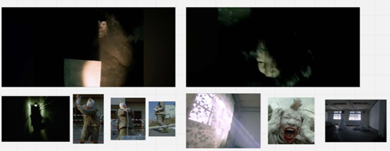
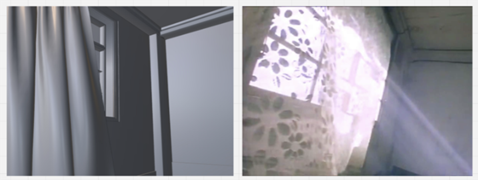
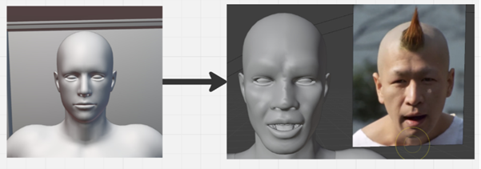
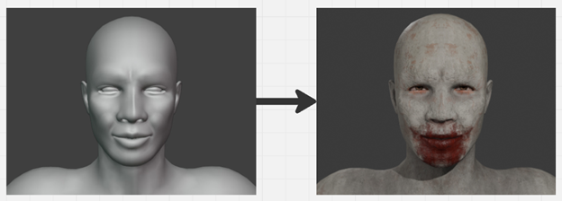

Práci jsem si vybral, protože se dlouhodobě věnuji tvorbě ve 3D, animace vznikla na základě zadání přijímacího řízení Fakulty výtvarných umění VUT, konkrétně ateliéru video. Tuto animaci jsem se rozhodl dále rozvinout, proto jsem si ji zvolil jako téma maturitní práce. Animace je inspirována japonským filmem 964 Pinocchio, film jsem si vybral podle zadání FaVU “Pinocchio”. Mým cílem je v práci přiblížit postup a problémy na které jsem narazil při tvorbě animace.
Moodboard
Moodboard slouží jako první koncepce toho, jak animace bude vypadat. Z filmu jsem vybral momenty, do kterých bych výslednou animaci chtěl esteticky ladit. Slouží jako záchytný bod při tvorbě scén a postavy. Při tvorbě moodboardu jsem narazil na problém zpracovatelnosti některých scén. Jelikož jsem měl přísný deadline, musel jsem vybrat scény, které jsou časově nenáročné na zpracování. Film se odehrává na mnoha místech, ale ne všechna byla pro animaci vhodná.

Blockout
Blockout určuje hlavní tvary a kompozici scény, je záměrně jednoduchý a bez textur. Díky jednoduchosti blockoutu je snadné jej upravovat a později s ním pracovat. V této fázi bylo pro mě nejtěžší věrohodně replikovat scénu se záclonou.

Modelování postavy
Při modelování jsem se soustředil jen na specifické části postavy, které budou v animaci viditelné. Především hlavu s obličejem a ruce. Důležité pro mě bylo postavu co nejvíce přiblížit Pinocchiovi z filmu. Původní model postavy jsem získal z programu Character Creator ale upravoval jsem jej pomocí sculptingu v Blenderu. Výhodou modelu z Character Creatoru je, že už má tzv. Kostru, která slouží k animování.

Texturování postavy
Po vymodelování postavy a scén, do kterých bude umístěna, jsem se zaměřil na tvorbu textur. Prvním krokem je příprava modelů k texturování, modely jsem projektoval do 2D mapy pomocí UV unwrappingu. Konkrétně na postavě jsem musel vyznačit švy, které ohraničují jednotlivé UV ostrovy (hlava, ruce). Model jsem poté exportoval z Blenderu ve formátu .fbx a potom importoval do Substance 3D Painter. Painter je program na texturování, ve kterém se model texturuje ve vrstvách, podobně jako Photoshop. Po importu jsem model bakenul, baking vytvoří textury nesoucí informace o modelu (zaoblení, lesk, povrch, apod.). Model jsem v programu otexturoval a textury z něj jsem exportoval ve formátu .png. Při tvorbě textur jsem se snažil napodobit postavu Pinocchia, model jsem musel zrcadlit, což se promítlo do textury. Zrcadlení ale znamená, že jsem mohl použít vyšší rozlišení textury jelikož je promítáná jen polovina modelu.

Animace
Celkově jsem vytvořil tři scény, jedna scéna pokoje a dvě scény z podzemí s postavou Pinocchia. Animace první scény pokoje byla nejjednodušší, jelikož předloha z filmu je velmi statická až na vlající záclonu. Záclonu jsem animoval pomocí simulace látky v samotném Blenderu. Ve zbylých dvou scénách jsem se zaměřil na části postavy jako obličej a ruce. Vytvořil jsem také blikající světlo, animace mění textury světla podle náhodně určené hodnoty. Čím vyšší je hodnota tím více svítí. Kameru ve všech scénách jsem animoval pomocí pluginu shakify, ten zajistil realistické pohyby kamery. Animace samotné postavy jsem dělal manuálně, ale pro ruce jsem zvolil knihovnu Mixamo. Mixamo obsahuje stovky realistických animací zachycených pomocí motion capture. Při animaci jsem měl problém najít vhodnou motion capture animace rukou. Nakonec jsem zvolil animaci, která se podobala tomu, co jsem chtěl a jen jsem ji v Blenderu upravil.
Střih a sound design
Zpracované scény s animacemi jsem vyrenderoval v Blenderu do formátu .mp4. Vyrenderovaná videa jsem importoval do VEGAS. Střih obvykle dělám zároveň se sound designem. V praxi to vypadalo tak, že jsem videa zhruba sestříhal dohromady a k nim tvořil zvukovou stopu. Podle vzniklé stopy jsem videa potom dostříhal, aby zvuk a obraz byly synchronizovány. Zkombinoval jsem vlastní knihovnu zvuků a zvuky ze samotného filmu. Výsledná animace trvá přibližně půl minuty.
Závěr
Na základě animace jsem byl přijat ke studiu na Fakultu výtvarných umění VUT, ateliéru videa. Jsem s ní osobně velmi spokojen. Myslím si, že má uměleckou hodnotu, jelikož ji vedoucí ateliéru velmi ocenili na pohovoru. Tvorba animace rozvinula mé znalosti v oblasti modelování postavy a její samotné animace. Při tvorbě jsem narazil také na nové problémy, které jsem musel kreativně řešit.